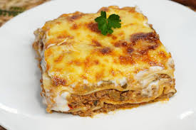

Lasaña

Descripcion
Hacer lasaña puede llevar mucho tiempo, pero los resultados bien valen la espera. Encontrará una lista detallada de ingredientes e instrucciones paso a paso en la receta a continuación
Ingredientes
- Carne
- Cebolla y ajo
- Productos de tomate
- Azúcar
- Especias y condimentos
- Fideos de lasaña
- Quesos
- Huevo
Pasos a seguir para hacer una Lasaña
- Prepara la salsa de carne.
- Cocine los fideos.
- Preparar la mezcla de ricota.
- Coloque la lasaña en capas según las instrucciones de la receta.
- Cubrir con papel aluminio y hornear.
- Deja reposar la lasaña antes de servir.